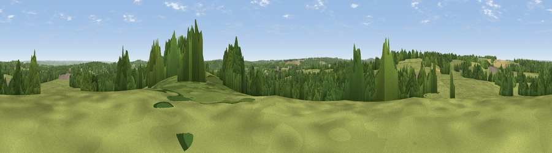

Viewpoint near Lamberhurst
#29842 in England · top 32% of its area beats it · near LamberhurstWhere it is
The exact computed spot (TQ 67225 37925). Click the marker for map links.
The view, rendered

A 360° render of this exact spot computed from the terrain model, tree cover and land cover — summer colours, afternoon light, calibrated against photographs of famous viewpoints. Real trees, hedges and buildings will differ in detail.
The panorama
Grey silhouette: terrain skyline in each direction (720 bearings, Earth curvature and refraction included). Dashed green: skyline with trees (+15 m) and buildings (+8 m) as obstacles. Blue strip: how far the ground is visible on each bearing.
Where the view opens
Wedge length = distance to the farthest visible ground on that bearing (vegetation-aware). Rings at 10, 25 and 50 km.
What fills the view
54% grassland · 39% woodland · 5% cropland · 2% built-up
Angular shares of the visible panorama (visual magnitude), not map area. Landscape diversity 0.40 (0–1 Shannon).
Key numbers
More beautiful places nearby
The staircase of upgrades: each row has a higher view potential than everything closer. Driving times are estimates from straight-line distance, calibrated against real road routing — check an actual route before setting out.
| Place | Direction | Drive | Score |
|---|---|---|---|
| Viewpoint near Pembury | WNW · 3 km | ~7 min | 45.4 |
| Viewpoint near Brenchley | N · 4 km | ~10 min | 51.9 |
| Viewpoint near Brenchley | NNE · 4 km | ~10 min | 55.0 |
| Best Beech Hill | SW · 8 km | ~16 min | 55.6 |
| Viewpoint near Bidborough | WNW · 11 km | ~22 min | 57.2 |
| Brightling Obelisk [Brightling Down] | S · 17 km | ~29 min | 69.1 |
| Viewpoint near Three Oaks | SSE · 30 km | ~47 min | 69.3 |
| Viewpoint near Guestling Green | SSE · 32 km | ~49 min | 72.2 |
51.11622, 0.38783 · source: screening · position refined by local search. Computed location — check access rights before visiting.